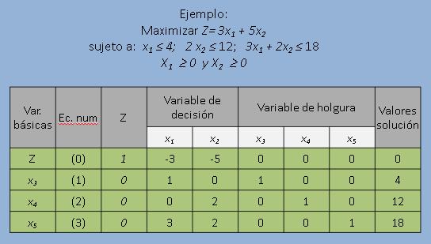

Metodo Símplex
Método Símplex Tabular
El método Símplex es un procedimiento general para encontrar la solución óptima a problemas de Programación Lineal. Este método logra la solución óptima en un número finito de pasos, la demostración de esto es lo que se pretende realizar.
El Método Símplex, esta diseñado para ser aplicado únicamente hasta que el problema se encuentre en la forma Estándar.
Un problema lineal se dice que esta en la forma estándar si:
- Todas las restricciones son igualdades
- Todas las variables son no-negativas
- Las limitaciones ( lado derecho de la restricción) son positivas
Igualdades y desigualdades en las restricciones
Una desigualdad puede fácilmente ser transformada a una igualdad (ecuación ) a través del uso de las variables de holgura en caso de:
- La desigualdad menor o igual (≤ ), la deficiencia de unidades para el lado izquierdo de la restricción iguale a lado derecho de la misma. Por lo que se agrega una variable de holgura con signo positivo en el lado izquierdo de la restricción.
- La desigualdad menor o igual (≥ ),el exceso de unidades que tiene el lado izquierdo de la restricción con respecto al lado derecho de la misma. Por lo que se agrega una variable de holgura con signo negativo en el lado izquierdo de la restricción.

Procedimiento del Método Símplex
Paso 1: Escribir la tabla inicial símplex
La forma tabular del método símplex registra la información esencial en la llamada Tabla Símplex, a saber:
- Los coeficientes de las variables
- Las constantes del lado derecho de las ecuaciones
- La variable básica que aparecen en cada ecuación
Paso 2: Encontrar la variable de decisión que entra en la base:
- En la línea de z, escogemos la columna con el coeficiente negativo mayor (en valor absoluto)
- Si no existe coeficiente negativo, significa que se ha alcanzado la solución óptima.
Paso 3: Encontrar la variable de holgura que tiene que salir:
Dividiendo la columna pivote, con la columna del lado derecho (o solución), siempre que sean positivos, el menor de los cocientes indicará cual es la fila que sale.
Paso 4: Ubicar el elemento pivote:
La intersección de la columna que entra y la fila que sale se denomina elemento pivote
Paso 5: Encontrar los coeficientes de la nueva tabla
- Los nuevos coeficientes de x se obtienen dividiendo todos los coeficientes de la fila que sale por el elemento pivote, para convertirlo en 1.
- Mediante la reducción Gaussiana se hacen ceros los restantes términos de su columna, con lo que obtenemos los nuevos coeficientes de las otras filas incluyendo la función objetivo z.
NOTA: Si en lugar de maximizar se trata de un problema de minimizar se sigue el mismo proceso, pero cambiando el sentido del criterio: para entrar en la base se elige la variable cuyo valor, en la fila de la función objetivo, sea el mayor de los positivos y se finalizan las iteraciones cuando todos los coeficientes de la fila de la función objetivo son negativos
Casos especiales
Conflictos entre variables básicas entrantes
Variables con el mismo coste reducido en la ecuación z, se puede elegir cualquiera
Conflictos entre variables básicas entrantes
DEGENERACIÓN
Variables con el mismo coste reducido en la ecuación z, se puede elegir cualquiera
- Variables básicas que se hacen simultáneamente 0 al incrementar la variable básica entrante. Las variables básicas no salientes toman valor 0 (degeneradas)
- Si estas variables básicas degeneradas siguen con valor 0 en otra iteración la variable básica entrante no puede incrementar su valor y tampoco la función objetivo z
- Si la función objetivo no se incrementa se puede producir un ciclo ( moverse por una secuencia de bases que definen el mismo punto extremo). Resoluble mediante procedimientos especiales
Inexistencia de la variable básica saliente
SOLUCIÓN NO ACOTADA
Variable básica entrante puede incrementarse indefinidamente sin anular ninguna variable básica actual. Los coeficientes de la columna pivote son negativos o cero.
No siempre es fácil obtener una solución básica factible inicial, en las variables originales del modelo. Para conseguir esto existen varios procedimientos como son:
- Método de la M.
- Método Símplex de dos fases.